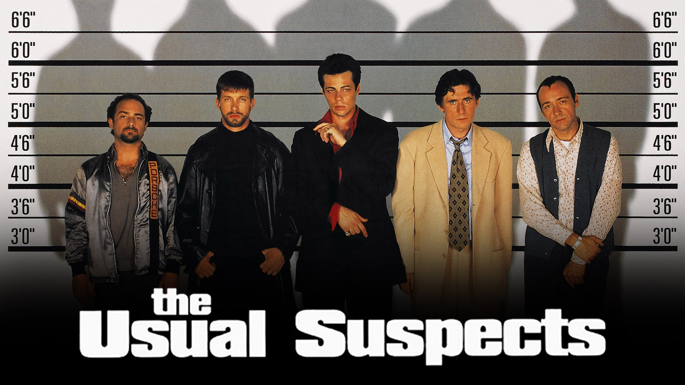

The Usual Suspects(1995)
Crime,mystery
The Usual Suspects directed by Bryan Singer is one of the best movies in crime and mystery genres. The plot follows the interrogation of Roger "Verbal" Kint, a small-time con man, who is one of only two survivors of a massacre and fire on a ship docked at the Port of Los Angeles. Through flashback and narration, Kint tells an interrogator a convoluted story of events that led him and his criminal companions to the boat, and of a mysterious crime lord—known as Keyser Söze—who controlled them.
movie imdb linkInterstellar(2014)
Scifiction

Interstellar is a 2014 epic science fiction film co-written, directed, and produced by Christopher Nolan. It stars Matthew McConaughey, Anne Hathaway, Jessica Chastain, Bill Irwin, Ellen Burstyn, Matt Damon, and Michael Caine. Set in a dystopian future where humanity is embroiled in a catastrophic blight and famine, the film follows a group of astronauts who travel through a wormhole near Saturn in search of a new home for humankind.
movie imdb linkHereditary(2018)
Horror
Hereditary is a 2018 American psychological supernatural horror film written and directed by Ari Aster in his feature directorial debut. Starring Toni Collette, Alex Wolff, Milly Shapiro, Ann Dowd, and Gabriel Byrne, the film follows a grieving family tormented by a demonic entity after the death of their secretive grandmother.
movie imdb link